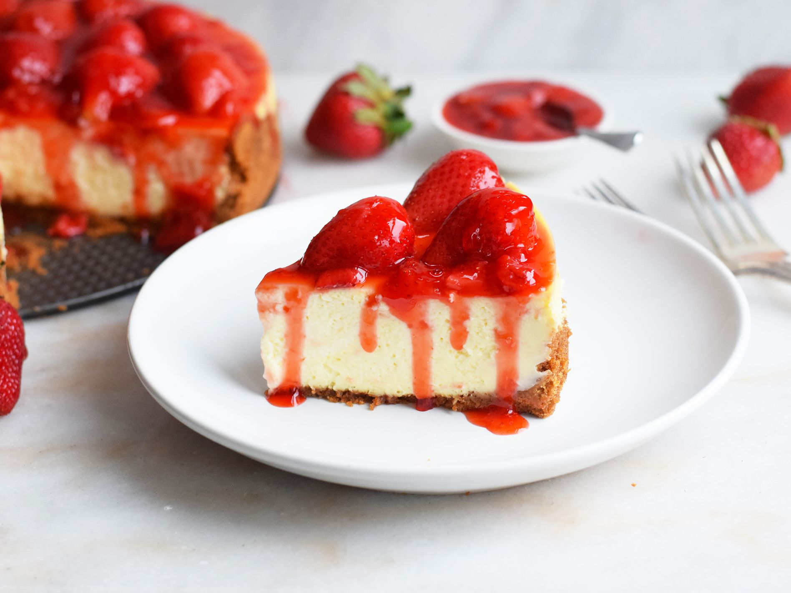

Strawberry Cheesecake

Description
It's the perfect desert! .
Ingredients
For the crust
- Nonstick cooking spray
- 2 1/4 c. graham cracker crumbs
- 1 stick salted butter, melted (1/2 cup)
- 2 tbsp. granulated sugar
For the filling
- 4 8-ounce package cream cheese, at room temperature
- 8 oz. sour cream, room temperature
- 1 1/4 c. granulated sugar
- 2 tbsp. all-purpose flour
- 1/2 tsp. salt
- 4 large eggs, room temperature
- 1 large egg yolk, room temperature
- 1 tbsp. vanilla bean paste or extract
For the toping
- 1 1/2 lb. strawberries, stemmed and quartered
- 1/3 c. granulated sugar
- 1 tbsp. lemon juice
- 1/4 tsp. salt
Steps
- For the crust: Preheat the oven to 325°. Wrap heavy-duty foil around the bottom and sides of a 9-inch springform pan. Spray the inside of the pan lightly with nonstick cooking spray.
- In a medium bowl, stir together the graham cracker crumbs, butter, and sugar. Press into the bottom and 1-inch up the sides of the springform pan. Bake until golden brown, 10 to 14 minutes. Cool completely on a wire rack, about 30 minutes.
- For the filling: In the bowl of an electric mixer fitted with a paddle attachment, beat the cream cheese on medium speed until no lumps remain, about 2 minutes. With the mixer on medium speed, gradually add the sour cream, sugar, flour and salt, beating until the batter is smooth and creamy, about 1 minute. Scrape down the sides and bottom of the bowl as needed.
- Reduce the mixer speed to low and add the eggs and egg yolk, one at a time, until just combined after each addition. Continue scraping down the sides and bottom of the bowl as needed. Stir in the vanilla bean paste.
- Pour the filling into the pan and place it into a large roasting pan. Place the pan into the oven and quickly pour hot water into the roasting pan so that it comes up about halfway up the foil-wrapped springform pan.
- Bake for 1 hour 10 minutes to 1 hour 20 minutes or until the cheesecake is set on the sides and just barely jiggles in the center when the pan is shaken. Turn the oven off and crack the oven door. Leave the cheesecake in the oven for 15 minutes.
- Remove the cheesecake from the water bath and transfer to a wire rack. Let the cheesecake continue cooling to room temperature, about 2 hours. Place in the refrigerator for at least 8 hours to chill completely.
-
For the topping: In a medium saucepan, combine 1 pound of the strawberries, sugar, lemon juice and salt over medium heat. Cook, stirring often, until strawberries break down and the sauce is thickened, about 20 minutes. Remove from heat. Stir in the remaining 1/2 lb. strawberries and cool to room temperature, about 1 hour.
-
To serve: Run a thin knife along the edge of the pan before removing the sides from the pan. Top the cheesecake with strawberry mixture just before serving.